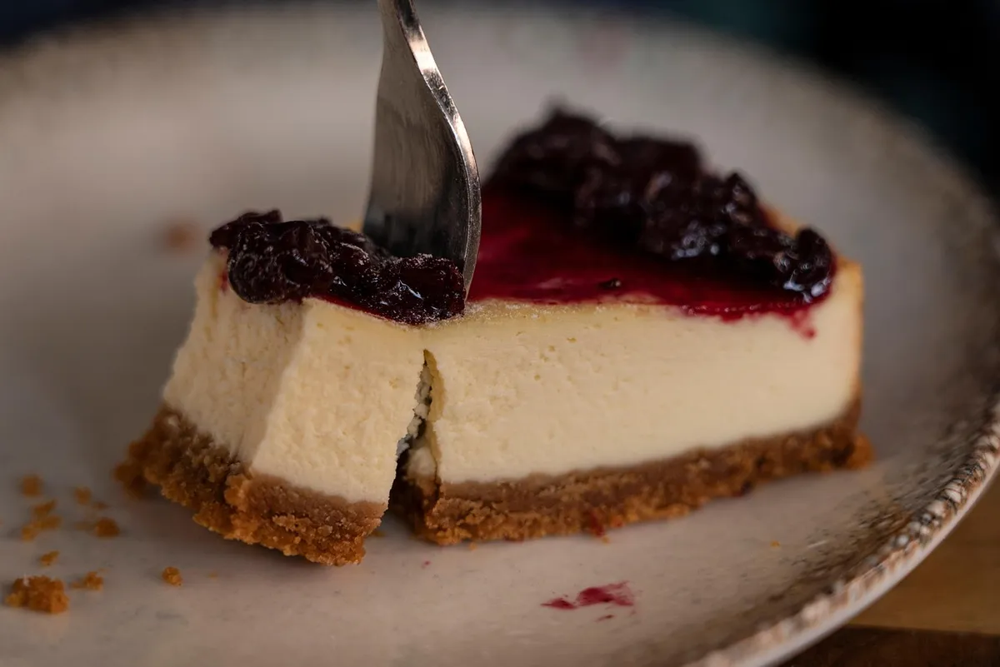

La tarta de queso es un postre cremoso y delicado, con una textura suave que se deshace en el paladar. Su sabor equilibrado entre dulce y ligeramente ácido la convierte en una opción irresistible, perfecta para cualquier ocasión.
| Ingrediente | Cantidad |
|---|---|
| Galletas tipo Digestive | 150 g |
| Mantequilla fundida | 100 g |
| Azúcar (para la base) | 15 g |
| Queso Crema | 500 g |
| Azúcar (para el relleno) | 150 g |
| Harina de fuerza | 40 g |
| Huevos talla L | 4 |
| Yema de huevo talla L | 1 |
| Nata líquida para montar | 350 ml |
| Zumo de limón | 25 ml |
| Extracto de vainilla | 1/4 De cucharada |
| Mantequilla para engrasar el molde | # |
Comenzaremos echando la nata líquida en un bol y agregándole el zumo de limón, removemos y dejamos reposar un mínimo de una hora a temperatura ambiente tapada con film. Veremos que una vez que pase el tiempo tendrá aspecto de nata cortada, reservamos en la nevera hasta el momento de usarla. Precalentamos el horno a 180 grados con calor arriba y abajo y posición media de la rejilla.
Engrasamos el molde con la nuez de mantequilla y vamos trituramos las galletas con un rodillo o robot de cocina, les agregamos el azúcar y la mantequilla fundida unos minutos en el microondas. Removemos hasta formar una masa con la que forraremos la base del molde, aplastando bien con el fondo de un vaso para que quede plana. Horneamos la masa durante quince minutos, una vez pasado el tiempo la retiramos y subimos la temperatura del horno a 225 grados. En el bol de una batidora con varillas echamos el queso crema a temperatura ambiente, el azúcar, la sal y la harina, la nata agria, la vainilla, los huevos y la yema. Batimos hasta obtener una crema lisa y homogénea. Vertemos en el molde y horneamos durante quince minutos a 225 grados, seguidamente bajamos a 130 grados la temperatura y horneamos el cheesecake durante una hora y veinte minutos. La crema del interior no debe cuajar en exceso pues después con el enfriado ya termina de solidificar en la nevera. Dejamos enfriar en el frigorífico unas seis horas como mínimo para que termine de coger cuerpo.